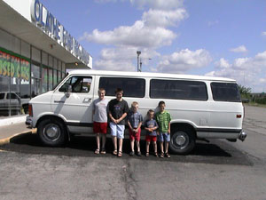
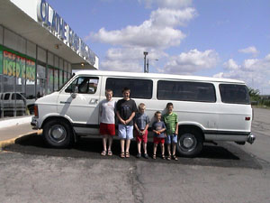

|
Tuesday, July 22, 2003 |
|

Got up this morning and talked to our bank. This will be the first time we have ever
borrowed money for a car. We don't like the idea. We have always lived so that if we
didn't have the money, we wouldn't buy it. But now we are stuck in Kansas. It would be
unwise to spend money and time to fix the current van. It would also be unwise to rent
a van for the next two weeks. We might as well use that money for the new van. So we
have decided to go ahead and borrow money for the new van. We will hopefully have
it paid off much sooner than the loan will expect.
|
8:00 am
|
Called Bob Manderino at Olathe Ford to let him know that
we plan to purchase his van. He says he will get it in for the work we agreed to (alignment and
third brake light) and that it should be ready by about 10:00 to 10:30 am.
|
|
So we have breakfast and get ready for the day. We have decided not to try to get down the road
today, because we have no idea how long it will actually take to exchange vehicles.
|
|
We have called the insurance company with the new vehicle information and they will be faxing
proof of insurance to the Ford dealer. We have also talked to Bryan and Emily (they are staying
in the house while we are gone) and they are going to over night the title to our van to the dealer.
|
10:40 am
|
The van made it one more trip. It wasn't great, but we did make it to the dealer. However,
the new van is not ready yet. We are going to do some paper work and hopefully it will be done
by then.
|
12:30 pm ?
|

We are done with the paper work, signed the loan, etc. but the new van is not ready yet. It
seems they haven't even started yet. As soon as they get back from lunch they will get right on it.
So we go and find something to eat.
|
2:30 pm ?
|
After lunch we are back at the dealer. They are finishing up cleaning the van. We move our belonging
to the new van, and they switch the plates for us. We are finally out of there sometime after 3:00 pm.
|
|
We drive to the Olathe Ford RV Center (another 30 miles or so the wrong way) to get an adapter for the
trailer. They are absolutely no help whatsover. Their salesman seemed like he just didn't want to be bothered
by me. There was no way he was going to help me find what I needed. I tried to explain the type of connector
I had, but I didn't know what I was talking about. He could have walked the 20 feet to the van and looked
himself, but he didn't want to be bothered. But, after searching their store on my own, and some trial
and error, I finally find the right adapter.
|
5:00 pm ?
|
We are finally back at the campground. We are going to fix some dinner and then go swimming. I sure am
glad we had already decided to stay the whole day in Lawrence. We ended up needing the whole day!
|
|
|
| << Previous |
Next >> |
{kind=link}
{kind=link}